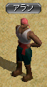
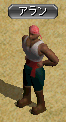

クエ概要、およびクエを受けるための条件
◆Lv600で受諾可。◆メインクエ、１日クエ、限界突破クエ以外の全てのクエを終わらせておく必要がある。
◆３次転生でリンケンのボルファーで終わったルートの続きである。
◆時間の目安としては1時間～２時間程度。私自身の経験からなので、参考程度に。
◆EXPがスフィアありで計430M入る。パワキを使ってEXPを稼ぐのもよい。
◆クエ進行は以下の通り。
| クエスト名 | 報酬EXP （スフィア有） |
|
|---|---|---|
| １ | 暁の使者の調査 | |
| ↓ | ||
| ２ | 協力者アラン | |
| ↓ | ||
| ３ | ダメルディ遺跡 | 170M |
| ↓ | ||
| ４ | ファウンティンス・ハイランド妨害工作 １ | |
| ↓ | ||
| ５ | ファウンティンス・ハイランド妨害工作 ２ | 170M |
| ↓ | ||
| ６ | 転生の志士 | 90M |
| ↓ | ||
| ７ | 勇気と無謀の境界線 |
４次転生時の注意点
◆転生直後、振っていたステ、スキルの再振りはされず、追加分（各４００ポイント）が与えられる。◆転生者はLvが100以上高い人とPTを組んで一緒に狩るとEXPが１になるので注意。
４次転生の特典
４次転生をすることにより、以下の特典が得られる。① ステ、スキルボーナス
それぞれ＋４００のボーナスがもらえる。無転の状態から数えると、１次～３次転生時にもらえる＋６００ボーナスと合わせて計＋１０００ずつ得ることになる。
② 指の装備出来る箇所
３次転生時と変わらず、計１０箇所。③ 転生者称号
転生者称号はLv３のまま。自分自身、およびPTメンバーに対し、狩りでのMOB経験値にボーナスがつく。
Lv３では、
◆自分自身のEXPボーナス＋20％ （ただし自分自身のLvが600以上になると無効）
◆PTメンバーのEXPボーナス＋10％ （PTメンバーのLvに関係なく取得）
④ 「暁の封印玉」使用可能回数増加
１回増えて計４回行う事ができるようになる。転生１回につき、使用可能回数が１回増える。暁の封印玉
課金アイテム（\1,200）。アイテムモールの「スペシャル」にて購入可。
◆装備要求Lv680以下のアイテムが対象。以前はLv400以下が対象だったが、2012/11/20の大型UPでLv680以下に変更になった。
◆インフィニティ武器、セットアイテムには使用不可。不滅、FAなどの680武器には使用可。
◆使用したアイテムは、銀行取引も含め全ての取引が不可になる。すなわちそのキャラクターに持たせっぱなしになる。
◆暁した装備に対し、OPのエンチャ、解除は可。鏡、異次元は不可。

 
